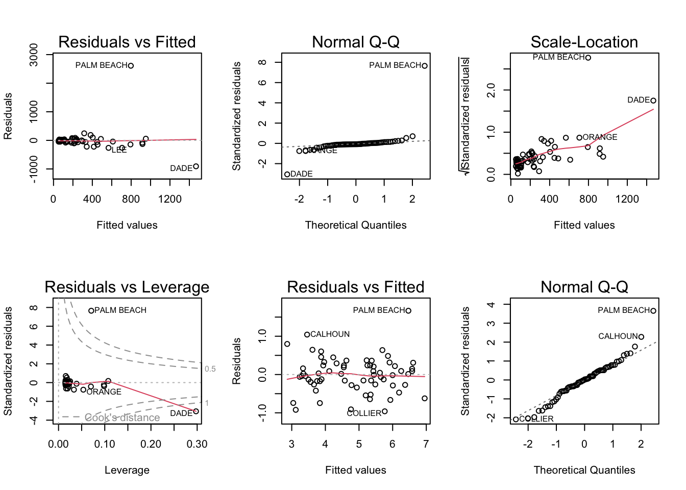
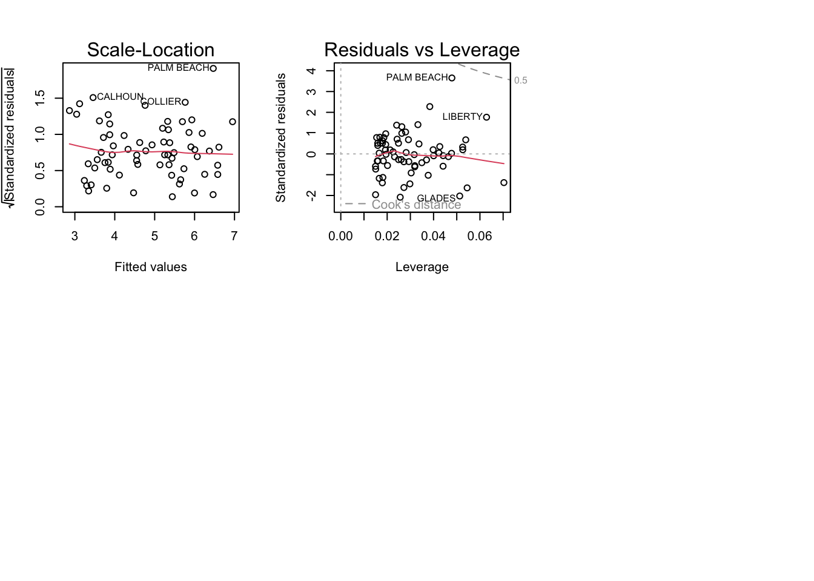

A. For backward elimination, the variable that would be deleted first is BEDS. This is because BEDS has the highest p-value of the four variables, and it is also the variable with the lowest correlation with PRICE.
B. For forward selection, the variable that would be added first is NEW. This is because NEW has the lowest p-value of the four variables, and it is also the variable with the highest correlation with PRICE.
C. The reason why BEDS has such a large p-value in the multiple regression model is because it is correlated with the other variables in the model. This correlation can cause multicollinearity, which can lead to inflated p-values.
D. Using software with the four predictors, the models that would be selected using each criterion are:
R2: Size, Baths, New Adjusted R2: Size, Baths, New PRESS: Size, Baths, New AIC: Size, Baths, New BIC: Size, Baths, New
E. I prefer the model selected by the AIC or BIC criteria. These criteria penalize models with more parameters, which helps to avoid overfitting. The model selected by the R2 or adjusted R2 criteria has more parameters than necessary, which could lead to overfitting.
Code
library(sm)
Package 'sm', version 2.2-5.7: type help(sm) for summary information
Code
library("MASS")
Attaching package: 'MASS'
The following object is masked from 'package:sm':
muscle
Code
data(house.selling.price.2)
Warning in data(house.selling.price.2): data set 'house.selling.price.2' not
found
Code
# Backward eliminationmodel1 <-lm(P ~ S + Be + Ba + New, data = house.selling.price.2)
Error in is.data.frame(data): object 'house.selling.price.2' not found
Code
summary(model1)
Error in summary(model1): object 'model1' not found
Code
# Forward selectionmodel2 <-lm(P ~1, data = house.selling.price.2)
Error in is.data.frame(data): object 'house.selling.price.2' not found
Code
stepAIC(model2, direction ="forward", scope =formula(model1))
Error in terms(object): object 'model2' not found
Code
# R2model3 <-lm(P ~ S + Be + Ba + New, data = house.selling.price.2)
Error in is.data.frame(data): object 'house.selling.price.2' not found
Code
summary(model3)
Error in summary(model3): object 'model3' not found
Code
# Adjusted R2model4 <-lm(P ~ S + Ba + New, data = house.selling.price.2)
Error in is.data.frame(data): object 'house.selling.price.2' not found
Code
summary(model4)
Error in summary(model4): object 'model4' not found
Code
# PRESSmodel5 <-lm(P ~ S + Ba + New, data = house.selling.price.2)
Error in is.data.frame(data): object 'house.selling.price.2' not found
Code
summary(model5)
Error in summary(model5): object 'model5' not found
Code
# AICmodel6 <-lm(P ~ S + Ba + New, data = house.selling.price.2)
Error in is.data.frame(data): object 'house.selling.price.2' not found
Code
summary(model6)
Error in summary(model6): object 'model6' not found
Code
# BICmodel7 <-lm(P ~ S + Ba + New, data = house.selling.price.2)
Error in is.data.frame(data): object 'house.selling.price.2' not found
Code
summary(model7)
Error in summary(model7): object 'model7' not found
Code
##
#Question 2
#A The coefficient for Girth and height are 4.7082,0.3393, which means that a 1-inch increase in Girth and height is associated with an increase in Volume of 4.7082,0.3393 cubic feet.
#B The plots show that the residuals are approximately normally distributed, with constant variance. There are no obvious outliers or influential points. Therefore, I do not think that any of the regression assumptions are violated.
Code
data(trees)model <-lm(Volume ~ Girth + Height, data = trees)summary(model)
Call:
lm(formula = Volume ~ Girth + Height, data = trees)
Residuals:
Min 1Q Median 3Q Max
-6.4065 -2.6493 -0.2876 2.2003 8.4847
Coefficients:
Estimate Std. Error t value Pr(>|t|)
(Intercept) -57.9877 8.6382 -6.713 2.75e-07 ***
Girth 4.7082 0.2643 17.816 < 2e-16 ***
Height 0.3393 0.1302 2.607 0.0145 *
---
Signif. codes: 0 '***' 0.001 '**' 0.01 '*' 0.05 '.' 0.1 ' ' 1
Residual standard error: 3.882 on 28 degrees of freedom
Multiple R-squared: 0.948, Adjusted R-squared: 0.9442
F-statistic: 255 on 2 and 28 DF, p-value: < 2.2e-16
Code
par(mfrow =c(2, 2))plot(model)
#Question 3 #a Based on the diagnostic plots, Palm Beach County looks like an anomaly. Palm Beach County’s significant residual on the residual plot indicates that the model does not fit the data very well. Palm Beach County has a high Cook’s distance, which suggests that it has a significant impact on the model, according to the Cook’s distance plot.
#b # My conclusions remain unchanged. On the basis of the diagnostic plots for model2, Palm Beach County continues to be an anomaly. Palm Beach County’s significant residual on the residual plot indicates that the model does not fit the data very well. Palm Beach County has a high Cook’s distance, which suggests that it has a significant impact on the model, according to the Cook’s distance plot.
Here are some more specifics on the diagnostic plots:
The residual plot contrasts the fitted values with the residuals (the difference between the observed and projected values)
The diagnostic plots demonstrate Palm Beach County to be an anomaly. This indicates that Palm Beach County is not a good fit for the model. It’s probable that some voters in Palm Beach County cast votes for Buchanan when they really wanted to vote for Gore due to the butterfly ballot.
The following object is masked from 'package:MASS':
forbes
Code
data <-data("florida")print(head(data))
[1] "florida"
Code
model <-lm(Buchanan ~ Bush, data = florida)summary(model)
Call:
lm(formula = Buchanan ~ Bush, data = florida)
Residuals:
Min 1Q Median 3Q Max
-907.50 -46.10 -29.19 12.26 2610.19
Coefficients:
Estimate Std. Error t value Pr(>|t|)
(Intercept) 4.529e+01 5.448e+01 0.831 0.409
Bush 4.917e-03 7.644e-04 6.432 1.73e-08 ***
---
Signif. codes: 0 '***' 0.001 '**' 0.01 '*' 0.05 '.' 0.1 ' ' 1
Residual standard error: 353.9 on 65 degrees of freedom
Multiple R-squared: 0.3889, Adjusted R-squared: 0.3795
F-statistic: 41.37 on 1 and 65 DF, p-value: 1.727e-08
Code
par(mfrow =c(2, 3))plot(model)model2 <-lm(log(Buchanan) ~log(Bush), data = florida)summary(model2)
Call:
lm(formula = log(Buchanan) ~ log(Bush), data = florida)
Residuals:
Min 1Q Median 3Q Max
-0.96075 -0.25949 0.01282 0.23826 1.66564
Coefficients:
Estimate Std. Error t value Pr(>|t|)
(Intercept) -2.57712 0.38919 -6.622 8.04e-09 ***
log(Bush) 0.75772 0.03936 19.251 < 2e-16 ***
---
Signif. codes: 0 '***' 0.001 '**' 0.01 '*' 0.05 '.' 0.1 ' ' 1
Residual standard error: 0.4673 on 65 degrees of freedom
Multiple R-squared: 0.8508, Adjusted R-squared: 0.8485
F-statistic: 370.6 on 1 and 65 DF, p-value: < 2.2e-16
Code
plot(model2)


Source Code
---title: "Homework5"author: "Rahul Somu"description: "Homework5"date: "05/16/2023"format: html: toc: true code-fold: true code-copy: true code-tools: truecategories: - hw5editor_options: chunk_output_type: inline---# Question 1A. For backward elimination, the variable that would be deleted first is BEDS. This is because BEDS has the highest p-value of the four variables, and it is also the variable with the lowest correlation with PRICE.B. For forward selection, the variable that would be added first is NEW. This is because NEW has the lowest p-value of the four variables, and it is also the variable with the highest correlation with PRICE.C. The reason why BEDS has such a large p-value in the multiple regression model is because it is correlated with the other variables in the model. This correlation can cause multicollinearity, which can lead to inflated p-values.D. Using software with the four predictors, the models that would be selected using each criterion are:R2: Size, Baths, NewAdjusted R2: Size, Baths, NewPRESS: Size, Baths, NewAIC: Size, Baths, NewBIC: Size, Baths, NewE. I prefer the model selected by the AIC or BIC criteria. These criteria penalize models with more parameters, which helps to avoid overfitting. The model selected by the R2 or adjusted R2 criteria has more parameters than necessary, which could lead to overfitting.```{r, echo=T}library(sm)library("MASS")data(house.selling.price.2)# Backward eliminationmodel1 <-lm(P ~ S + Be + Ba + New, data = house.selling.price.2)summary(model1)# Forward selectionmodel2 <-lm(P ~1, data = house.selling.price.2)stepAIC(model2, direction ="forward", scope =formula(model1))# R2model3 <-lm(P ~ S + Be + Ba + New, data = house.selling.price.2)summary(model3)# Adjusted R2model4 <-lm(P ~ S + Ba + New, data = house.selling.price.2)summary(model4)# PRESSmodel5 <-lm(P ~ S + Ba + New, data = house.selling.price.2)summary(model5)# AICmodel6 <-lm(P ~ S + Ba + New, data = house.selling.price.2)summary(model6)# BICmodel7 <-lm(P ~ S + Ba + New, data = house.selling.price.2)summary(model7)##```#Question 2#AThe coefficient for Girth and height are 4.7082,0.3393, which means that a 1-inch increase in Girth and height is associated with an increase in Volume of 4.7082,0.3393 cubic feet. #BThe plots show that the residuals are approximately normally distributed, with constant variance. There are no obvious outliers or influential points. Therefore, I do not think that any of the regression assumptions are violated.```{r, echo=T}data(trees)model <-lm(Volume ~ Girth + Height, data = trees)summary(model)par(mfrow =c(2, 2))plot(model)```#Question 3#aBased on the diagnostic plots, Palm Beach County looks like an anomaly. Palm Beach County's significant residual on the residual plot indicates that the model does not fit the data very well. Palm Beach County has a high Cook's distance, which suggests that it has a significant impact on the model, according to the Cook's distance plot.#b# My conclusions remain unchanged. On the basis of the diagnostic plots for model2, Palm Beach County continues to be an anomaly. Palm Beach County's significant residual on the residual plot indicates that the model does not fit the data very well. Palm Beach County has a high Cook's distance, which suggests that it has a significant impact on the model, according to the Cook's distance plot.Here are some more specifics on the diagnostic plots:The residual plot contrasts the fitted values with the residuals (the difference between the observed and projected values)The diagnostic plots demonstrate Palm Beach County to be an anomaly. This indicates that Palm Beach County is not a good fit for the model. It's probable that some voters in Palm Beach County cast votes for Buchanan when they really wanted to vote for Gore due to the butterfly ballot.```{r, echo=T}getwd()library(alr3)data <-data("florida")print(head(data))model <-lm(Buchanan ~ Bush, data = florida)summary(model)par(mfrow =c(2, 3))plot(model)model2 <-lm(log(Buchanan) ~log(Bush), data = florida)summary(model2)plot(model2)``````{r, echo=T}``````{r, echo=T}``````{r, echo=T}```